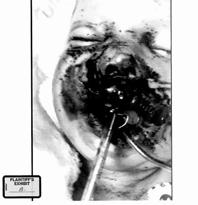

 |
| The truth in black and white -- but don't believe it: Sheriff Joey insists that this is the face of a criminal. |

(See the update at the bottom of the essay, or click here.)
It was the baby’s fault that he was nearly burned to death
in his own crib.
Bou-Bou Phonesavanh was barely a year and a half old, just
learning to walk, and unable to speak, but those limitations didn’t stop him
from engaging in “deliberate, criminal conduct” that
justified the 2:00 a.m. no-knock SWAT raid in which he was nearly killed.
The act of sleeping in a room about to be breached by a SWAT
team constituted “criminal” conduct on the part of the infant. At the very
least, the infant was fully liable for the nearly fatal injuries inflicted on
him when Habersham County Sheriff’s Deputy Charles Long blindly heaved a
flash-bang grenade – a “destructive device,” as described by the ATF, that when
detonated burns at 2,000-3,500 degrees Fahrenheit – into the crib.
| The detonation of a flash-bang grenade. |

Merely by being in that room, Bou-Bou had assumed the risk
of coming under attack by a SWAT team. By impeding the trajectory of that
grenade, rather than fleeing from his crib, Bou-Bou failed to “avoid the
consequences” of that attack.
In any case, Bou-Bou, along with his parents and his
siblings, are fully and exclusively to blame for the injuries that nearly
killed the child and left the family with more than one million dollars in
medical bills. The SWAT team that invaded the home in Cornelia, Georgia on the
basis of a bogus anonymous tip that a $50 drug transaction had occurred there
is legally blameless.
This is the defense presented
by Haberham County Sheriff Joey Terrell and his comrades in their reply to a federal lawsuit
filed last February on behalf of Bou-Bou Phonesavanh and his family.
A tax-subsidized settlement was reached about a month ago in which the National Fire Insurance Company will pay $964,000 to the family -- a little more than $538,000 for medical expenses, and multiple installments of $200,000 to the infant after he turns 18 in 2033. This arrangement will leave the family facing at least a half-million dollars in current medical expenses, a figure that will be matched or eclipsed by future costs incurred by Bou-Bou's ongoing medical treatment.
In familiar fashion, nobody responsible for this crime will be compelled to make restitution, or be held accountable for the nearly fatal injuries inflicted on the child – and the significant but non-life-threatening injury suffered by his father -- during the 2:00 a.m. home invasion that took place nearly a year ago.
A tax-subsidized settlement was reached about a month ago in which the National Fire Insurance Company will pay $964,000 to the family -- a little more than $538,000 for medical expenses, and multiple installments of $200,000 to the infant after he turns 18 in 2033. This arrangement will leave the family facing at least a half-million dollars in current medical expenses, a figure that will be matched or eclipsed by future costs incurred by Bou-Bou's ongoing medical treatment.
In familiar fashion, nobody responsible for this crime will be compelled to make restitution, or be held accountable for the nearly fatal injuries inflicted on the child – and the significant but non-life-threatening injury suffered by his father -- during the 2:00 a.m. home invasion that took place nearly a year ago.
Nearly every lawsuit begets a “defendant’s reply” disputing
all of the factual allegations and legal claims presented by the plaintiffs.
Where the defendants are law enforcement officers, the objective is to build a
case that the actions of the officers were “reasonable” and in compliance with established
“policies and procedures” – and thus protected by “qualified immunity.” From
this perspective, the assailants are innocent of all liability even though they
did everything wrong – and the
victims are fully to blame even though they did nothing wrong. The reply filed on behalf of Sheriff Joey's deranged deputies will serve as a legal clinic for other departments involved in similar Soviet-grade atrocities in the future.
No evidence of any illegal conduct was found at the home as
a result of the raid. The front yard and driveway of the residence abounded in
evidence that children lived there – evidence so clear and compelling that even
a police officer would have recognized it. The search and arrest warrant was
issued at about 2:00 in the afternoon on May 27; this offered plenty of time
for the vigilant and capable personnel of the Habersham County Sheriff’s Office
to conduct surveillance of the targeted residence and even to arrest the
suspect in more conventional fashion, assuming that this was necessary and
justified.

The subject of the warrant, Wanis Thonetheva, was not at the
residence when the stormtroopers arrived. He was arrested on narcotics charges several
hours later, in broad daylight and in unremarkable fashion, “at his actual
place of residence, without any resistance and without the use of a flashbang
stun grenade,” the lawsuit recalls.
At the time that arrest was being made, Bou-Bou’s parents
were just absorbing the horror of what had been done to the infant by the
assailants who had broken into their temporary home without cause and kidnapped
the gravely wounded child.
Bou-Bou’s father -- in agony from a torn rotator cuff that
resulted from being assaulted, thrown to the floor, and shackled by one of the
invaders -- noticed some blood in the empty crib. The screaming child had been seized
by the berserkers and taken away. The frantic parents were not allowed access
to the traumatized and bleeding child—“officer safety” uber alles, you know. To cover the abduction, one of the officers
on the scene did what comes naturally to highly trained police officers: he
hastily improvised a self-serving lie.
“The parents were told by officers on the search team that
their son had a tooth dislodged as a result of the search and that the blood
that the parents saw in or about the area of the crib was due to the alleged
tooth issue,” recounts the lawsuit. The parents “did not know the extent of
their son’s injuries (and were not provided truthful information about them by
the Defendants) until they were told at the Hospital where their son was taken
that he was in a coma.”

Yes, it is possible that one of the infant’s newly-cut teeth
had been “dislodged” by the stun grenade. What the people responsible for that
act of abhorrent criminal violence did not mention was that the toddler also
suffered “severe blast burn injuries to the face and chest; a complex
laceration of the nose, upper lip and face, twenty percent of the right upper
lip [was] missing; the external nose [was] separated from the underlying bone;
and a large avulsion burn into the chest with a resulting left pulmonary
contusion and sepsis.”

Sheriff Joey’s underlings told Bou-Bou’s parents that they
had knocked out one of the baby’s teeth. They actually blew off his face and
gouged a hole in his chest. Exhibit B in the lawsuit is an unbearable hospital
photograph of the child in a medically induced coma immediately after the
attack. The Defendant’s reply to that piece of evidence is a denial that the
photograph “accurately depicts the injuries allegedly sustained” by the infant.
Even if that photograph is a reliable depiction of those
injuries, the baby only had himself to
blame, according to Sheriff Joey and his band of privileged cretins.
Bounkham “Bou-Bou” Phonesavanh is the lead plaintiff in the
lawsuit, with his parents listed as co-plaintiffs. When the defendants claim that
the damages caused to the child, “if any,” were “directly and proximately
caused by the contributory and comparative negligence of plaintiffs and
their failure to exercise ordinary care,” they are blaming the baby for not
foreseeing the possibility that he would be attacked by a SWAT team at 2:00
a.m. and burned alive in his crib.
When the defendants seek to deflect blame by claiming that “the
deliberate, criminal conduct of [the] plaintiffs … supersedes any and all
negligence or liability, if any, on the part of these defendants,” they are
pretending to believe that the 19-month-old child was part of a criminal
conspiracy.

In its “eleventh defense,” Sheriff Joey and his Brownshirts
let everything fly, invoking the doctrines of “assumption of the risk, failure
to avoid consequences, laches, failure to mitigate damages, last clear chance,
and sudden emergency.”
Reduced to its putrid essence, this compound defense amounts
to a single claim: If you live anywhere within the claimed jurisdiction of a
federally subsidized einsatzgruppe like the
Mountain Judicial Circuit Narcotics Criminal Investigation and Suppression Team,
then you are fair game for an after-midnight military raid, and you have only
yourself to blame once it happens.
It doesn’t matter that the raid is the product of a
dishonestly obtained search warrant issued on the basis of an anonymous tip
from a petty criminal, or that no evidence of illegal activity was ever
discovered. If your home is torn apart and your infant is nearly killed, you alone
are responsible, and the gallant agents of public order cannot be held liable. This
is true even in cases like that of the Phonesavankh family, who sought a
temporary home with a relative in Georgia after their house in Wisconsin was
claimed by a fire.
This is all covered by the “Sucks to be you” provision of
the “If you’re not a cop,
you’re little people” doctrine.

Bobbing like feculent flotsam in the puddle of sewage that
is the defendants’ “eleventh defense” is the term “laches,” which
refers to an impermissible delay by a plaintiff in bringing forward a claim for
damages.
This obviously doesn’t apply to the conduct of the Phonesavankh family
in this case. They filed a timely notice of tort claim, and then proceeded to
file the lawsuit after
the Habersham County grand jury refused to hold the Sheriff and his minions
accountable – and after the county government broke its promise to pay for
Bou-Bou’s medical treatment.
The origins and usage of that obscure and archaic legal term
do offer some insight about the way Bou-Bou’s would-be murderers see
themselves, and their victim.
“Laches” is a term embodying the ancient legal maxim
that “Equity favors the vigilant, and not those who have slumbered on their
rights.” Defendants who appeal to this oft-cited and little-applied concept are
accusing plaintiffs of subjecting them to
a form of “legal ambush.”
What Sheriff Joey and his cornpone chekists are claiming, in effect, is that while he was sleeping, Baby Bou-Bou ambushed them.
(This post has been updated to include details of the settlement.)
Update, May 21
Some commenters have asked for specific quotes from the "Defendants' Reply" blaming Bou-Bou for the injuries he suffered, and accusing him of negligence or "criminal" conduct. For those interested in reading full text of that reply, the document is found in a Scribd archive, which is accessible through links in the essay above.
Under the "Four Corners" doctrine, which applies to wills, contracts, and other legal instruments, the author's intention in composing such a document is defined by the plain meaning of the text. If a claim or assertion isn't found within the four corners of that document, it can't be considered. The "Defendants' Reply" made several accusations about the supposed conduct of the "plaintiffs"; nowhere within that text is an effort made to distinguish Bou-Bou from the other defendants.
The lead plaintiff in the lawsuit is the infant, Bounkham Phonesavanh. The Defendants' Reply imputes "deliberate, criminal conduct" to all of the plaintiffs without exception; it is an assertion of joint and several liability on the part of the infant and his parents (described as his "Natural Guardians as Next Friends").
With this in mind, read the "Seventh Defense" on page 34, in which the defendants assert that "plaintiffs' damages, if any, were directly and proximately caused by the contributory and comparative negligence of plaintiffs and their failure to exercise ordinary care."
They did not exempt Bou-Bou from that charge. They couldn't -- he is the chief plaintiff.
The same applies to the claims made in the Tenth Defense (see page 35) that the injuries and damges "were caused by the deliberate, criminal conduct of plaintiffs."
Omission of the definite article from those statements is a failed attempt at a semantic dodge: If the intent were to exempt Bou-Bou, the author of this scabrous brief would have specified which of the plaintiffs had supposedly engaged in "criminal conduct." Absent that specification, the defense mounted on behalf of Sheriff Joey and his minions focused squarely on the lead plaintiff, the infant who was nearly murdered in his sleep.
(My
sincere thanks to the heroic Rev. John Pittman Hey for sharing his PACER research on this
case.)
Click here to download or listen to this week's Freedom Zealot Podcast.
For updates, please follow me on Twitter.
Your financial help is urgently needed to keep Pro Libertate online -- and just as deeply appreciated. Thank you so much!
Dum spiro, pugno!
22 comments:
I hate that I've become so jaded and cynical about the abuse of citizen's by police that a story this horrifying fails to surprise me. I can only add another layer to the already burning ball of hatred I have for these government-sponsored thugs and say a prayer for Bou-Bou and the rest of the Phonesavanh family, which no doubt offers them scant comfort.
Mr. Grigg, I must protest. Calling these murderous thugs "cornpone" is an insult to a historic and delicious foodstuff. Cornmeal based breads are a tradition with my ancestors and in no way should be used to describe a group of people of such poor morals and suspect character that they became government employees.
.... but the grand jury noted that the law enforcers are suffering too. poor guys.
why are there so many apologists for these thugs? the authority of the state is a myth; a dangerous superstition.
keep up the good work.
Things like this are why I will NEVER mourn a dead cop. I just smile inside every time one dies- especially if killed while performing his disgusting "job".
I'll bite:
I have to put in the disclaimer about deploring the violent nature of that no-knock raid but . . .
So you're saying the police don't have right to enforce the law on private land? They have the public streets and that's it?
It's clear from your article the family had a drug dealer in the family and as such were endangered by him. Have the family never heard of the Clean Hands Doctrine? Being associated with a known criminal endangers you even if you are not a criminal. I'm sure the author would have no problems if the family of a drug dealer got seriously hurt due to a rival drug gang because of "well you lie down with dogs you expect fleas."
On the other hand, what evidence is there that the anonymous tip is bogus? Does the author know what the tip said? The author seems brushes it off as thought it were a prank done by a sadistic weirdo or was a cop.
Gil, bear in mind that the phony tip here dealt with an alleged $50 drug transaction. Is there any rational basis for describing a SWAT raid as a proportionate response?
I obviously do not approve of innocent people being injured in the crossfire between rival gangs. That is precisely what happened when Sheriff Joey's goons broke into this home. His Task Force is an armed gang that profits from the prohibition-enhanced profits of narcotics trafficking, after all.
At the time of the raid last year, Georgia law didn't authorize no-knock warrants. The raid would have been illegal even if it had been carried out on the basis of legitimate probable cause, as opposed to the uncorroborated word of an anonymous informant seeking a "downward departure."
As I mentioned above, the cops had twelve hours after obtaining the warrant to find and arrest the subject, to corroborate the tip, or at least to conduct surveillance of the home and calibrate their tactics. They did none of these. When they broke into the residence they found no evidence of criminal conduct whatsoever (the warrant was so broadly written that nearly anything could have qualified). This definitively disposes of the question of the informant's reliability.
Baby Bou-Bou's family, you apparently didn't notice, had been left homeless when their house in Wisconsin burned down. They were refugees, not accomplices (assuming that we treat narco-entrepreneurship as innately criminal, which it isn't).
What you describe as the "clean hands" doctrine is more appropriately designated the "Pavlik Morozov doctrine": Your highest duty is to the State, which means that if a relative is the State's enemy you should turn him in.
Neither guilt by association nor "corruption of blood" is a valid constitutional principle. Of course, we're living in an era when "pattern of life" analysis is used to select targets for drone strikes overseas, and, apparently, for post-midnight SWAT raids in the Homeland.
"So you're saying the police don't have right to enforce the law on private land?"
Cops have no rights to enforce "law" anywhere. What they have is power- which they abuse. "Laws" against politically incorrect drugs are counterfeit "laws" and those enforcing them thus become the thugs.
Once again what do you mean by "phony?" Some crazy person accuses innocent people and laughs his ass off when time after time SWAT team burst into innocent people's houses? Or was a it cop pretending to be a "concerned citizen" so cops can effective write up their own search warrants?
As said too I have to put in the disclaimer against the ferocity of the raid. It is indeed indefensible too.
Nope, Clean Hands Doctrine amounts to "a miss is as good as a mile" or "sweat the small stuff." If I know someone's a habitual "white" liar I know the same person is going to definitely lie in a serious situation. After all, most times the real life situation of an "innocent person who gets convicted for a crime they didn't commit" turns out to usually be a low-level criminal was set up by a high-level criminal as a fall guy.
And of course K. McManigal's comment pretty much some sites like this one: "I want to commit crimes and believe that 'it's not a crime to me' should the whole of the law."
Once again what do you mean by "phony?"
Phony (adj.) -- Having none of the substance imputed to it; see -- false, spurious, contrived, inauthentic, disingenuous, mendacious, etc.
The officer who filed the warrant affidavit vouched for the reliability of the unnamed informant, who has never been identified. She (the officer) may well have pulled a Jayson Blair and invented that "witness" out of whole cloth.
The claims offered in that affidavit were not only inaccurate, but false down to the level of detail. The fact that the cops did no follow-up investigation prior to the 2:00 a.m. raid demonstrates a complete disinterest in the truth.
The attitude you impute to Mr. McManigal is cognate with the doctrine of "qualified immunity" that protects cops when they commit atrocities of this kind: "It is profitable to treat vices as if they were crimes, which means that we can commit perjury, aggravated assault, an attempted murder, and suffer no personal consequences on account of our exalted position in law enforcement."
For people like Sheriff Joey, "Officer safety" is the whole of the law; this includes forcing tax victims to indemnify the injuries they inflict on the innocent.
Gil, you simply are a completely clueless wonder. I now know why this country is going down the proverbial drain, the fault lies directly on your shoulders and others who "feel" as you do. You are either a cop or a cop apologist, not sure which.
You are a soviet and you either cannot see it and accept it or you don't know what one is. You cannot read for comprehension, as Kent's message said nothing close to what you claim. You don't understand the 'clean hands doctrine".
There was no drug dealer in the immediate family.
He had lived there previously and did not at the time.
The cops did no due diligence.
The cop(s) lied on their warrant application.
There was no need for a 2:00am SWAT raid, even if the drug dealer did live there.
From the evidence of this raid and hundreds of others, all SWAT teams need to be disbanded immediately, their members fired and have a life time ban imposed on them of ever being a police officer. The dumbing down of America continues apace, exhibit #1 is "Gil"
If the Grand Jury failed to hold those cops accountable you can blame the DA's office for prosecutorial misconduct. The District Attorney's Office has total control of the Grand Jury in what and how it thinks and the evidence presented. Obviously, the DA didn't want to prosecute those cops.
The jurors themselves are largely to blame, as well. They do not have to defer to the DA.
i have seen 'gil' at other sites i go to. he is apparently the resident attack dog for the authoritarians and enablers among us.
let him write his drivel. we all know where he is coming from and it is not our side of the argument.
The only way we can hold these criminals accountable is to take OUR courts back and put OUR common law back in where it belongs with OUR citizen common law grand juries. These are OUR courts that were taken over by exceedingly corrupt judges, DAs and the rest of the festering pile of pus. The petit and grand juries are tampered with by the corrupt judges and DAs and the judges make up "law" as they go along.
There is no justice, no restitution, no fair play, no honesty and the slimy state CANNOT claim to be the victim. This MUST stop but only the People can stop it--the filth are growing rich upon the backs of those who they victimize in what used to be OUR courts.
We are in the process of taking back our courts. nationallibertyalliance dot org is the grassroots process for this. Please join us if you'd like to regain your voice, your rightful power and authority and your unalienable rights.
I'm having trouble finding the statements about the baby being to blame in the linked response document. Even searching directly for some of the quotes I am not finding it. Can someone say at least what page of the response contains the content saying the baby was at fault?
Agreed. 2nd article on this case that I've read where the linked content does not contain the quoted material. Shady journalism imo.
The lead plaintiff in the lawsuit is the infant, Bounkham Phonesavanh. The Defendants' Reply imputes "deliberate, criminal conduct" to all of the defendants without exception; it is an assertion of joint and several liability on the part of the infant and his parents (described as his "Natural Guardians as Next Friends").
With this in mind, read the "Seventh Defense" on page 34, in which the defendants assert that "plaintiffs' damages, if any, were directly and proximately caused by the contributory and comparative negligence of plaintiffs and their failure to exercise ordinary care."
They did not exempt Bou-Bou from that charge. They couldn't -- he is the chief plaintiff.
The same applies to the claims made in the Tenth Defense (see page 35) that the injuries and damges "were caused by the deliberate, criminal conduct of plaintiffs."
Omission of the definite article from those statements is a failed attempt at a semantic dodge: If the intent were to exempt Bou-Bou, the author of this scabrous brief would have specified which of the plaintiffs had supposedly engaged in "criminal conduct." Absent that specification, the defense mounted on behalf of Sheriff Joey and his minions focused squarely on the lead plaintiff, the infant who was nearly murdered in his sleep.
Sheriff Joey explains raid
I love how he points out everyone's ethnicity, as though it's relevant to anything.
At 3:30 he says they knew from the CI that "the woman and the children stayed hid in a different part of the house because they knew they were selling drugs out of the house." (He says this again at ~13:00.) But at 3:50 he says their policy is not to use the flash bang if there are children - and then goes on to say a few seconds later if they knew the children were there they would have gone in through a different door.
Exchange beginning around 8:30
Interviewer: "Obviously this went terribly wrong ..."
Sheriff Joey: Yes Ma'am.
Interviewer: What can you do?
~9:00 Sheriff Joey: I called our DA ... DA's words were, if you get the same information about another subject, would you do the same thing?
And the answer is yes. [...]
9:40 "you knew it wasn't a daycare, you knew there wasn't .... you knew ... you, you, knew there ... you *thought* there wasn't children in the home, the information given, there wasn't children, the last time we were there there wasn't children in the home, so you was going off things you knew there wasn't, you knew *in your mind* there wasn't children in the home, that's why you proceeded like you did, so you didn't act maliciously."
[...]
10:33 "we knew *in our minds* there wasn't children there but unfortunately there was. You know sometimes that unavoidable thing of ... bad things happen to good people, you know this baby didn't deserve what happened to it ..."
IT?
"... the officers that went through it didn't deserve this either."
13:18
"He's a domestic terrorist, because people like THIS are tearing our country apart [...] this family is torn apart."
If you can stomach any more of this interview, Sheriff Joey explains why the raid was carried out at 2 in the morning ~15:35.
LACHES: “In those few and unusual cases where a plaintiff unreasonably delays in bringing suit and consequently causes inequitable harm to the defendant, the doctrine permits a court to bring about a fair result.” Petrella v. MGM, 572 US ____(2014) (Breyer, J., dissenting).
It is difficult to see how the "fair result" in this case would be to deny the child a day in court. The evidence of the injuries, training, and police actions have been amply documented so that the matter could be "fairly" decided for years to come. Unless Georgia has a statute putting a time limit on tort claims (...which is quite possible, and might be referred to loosely as "laches"...) it's difficult to see how that word could be used honestly in this case.
I live in Georgia. This is a terrible story. What it does not need is sensationalist posts and headlines not supported by the facts. The "update" to this post that attempts to defend the claim that the defendants "ambushed" or blamed the baby is absurd. The defendants submitted an Answer to a Complaint. They referred to plaintiffs. The very fact that you have to get so technical in your defense betrays the lack of support for the claim. These officers made a mistake. They should be tried and punished for it. But they have the right to submit an Answer to a Complaint without self-righteous crusaders warping their words in order to make them look like monsters. I think posts like this do a disservice to the cause of civil libertarianism. Far too often, I see this kind of playing loose with the facts in order to dress up a story. I once had an argument with an author over at Reason, in the headline to a post, claimed a police officer "held a gun to the head" of a child. The reality was that the officer entered the child's bedroom, pointed a gun at the child, and told him/her to get dressed and come outside. We can debate whether that was necessary or not. I, for one, believe that most law enforcement officials upon entering a room are going to instinctually point their weapon at any living person they come across. What cannot be debated is that there was no holding a gun to the head of the child. None. After arguing with the author on Twitter, he finally agreed to edit his post and change the headline.
There is no need to dress a story like this up. It's terrible already. Please stick to the facts.
The claim is patently absurd. The clarification was offered as a service to those who don't clearly understand the legal concepts in play here, and as a rebuke to people who are seeking to defend the abhorrent behavior of Sheriff Joey and his comrades.
The officers in this case did not "make a mistake"; they committed horrible crimes. Their actions define them as monsters without elaboration or embellishment by anyone.
If Sheriff Joey were any part of a man, he would fire all of the deputies responsible for this atrocity, resign himself, and devote himself to an effort to make restitution to the victims in this case. Instead, his first instinct was to insist -- while the infant was still in a medically induced coma -- that there was no need for an investigation, that the real victims were the officers who committed this crime, and that the suspect who allegedly made a $50 drug deal was a "domestic terrorist" of the kind that justifies 2:00 military raids in residential neighborhoods.
Defendants in a civil action do have a right to submit an answer to a complaint. The answer submitted on behalf of the people who nearly murdered Baby Bou-Bou was a libelous broadside against the "plaintiffs" in this case. It did not exempt the infant, nor was any effort made to distinguish that victim from the others.
The officers were represented by competent counsel who could have made such a distinction, but did not. Contrary to the defendants' invocation of "laches" in this instrument, they had ample time to refine and perfect a response to a lawsuit they knew was coming. This reply was what they settled for. It is a work of unalloyed malice and utter dishonesty.
this fat evil thing who claims to be a cop should have one bang grenade stuffed in his pants to set off, we the people must insure things like do not reproduce.
Post a Comment